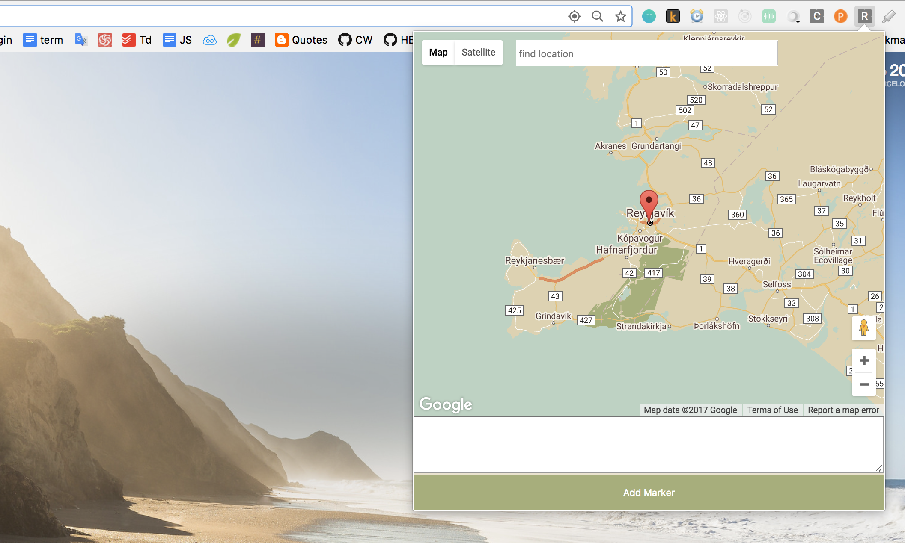
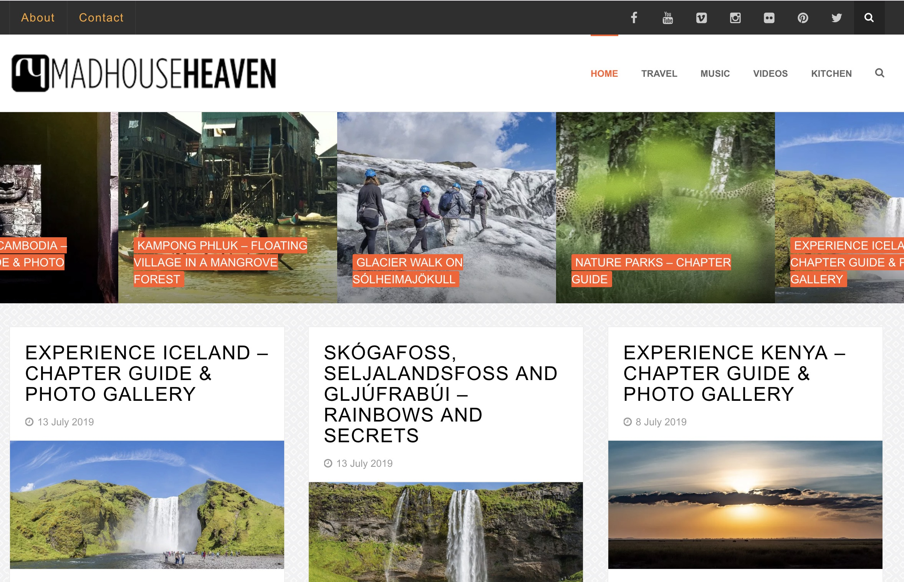

I'm a Full Stack Software Engineer, and I work with JavaScript. Three years ago, I taught myself how to code. Since then, I've developed production ready apps and websites, working on many projects with a wide variety of technologies. Front-end technologies I have enjoyed working with are React + Redux and GatsbyJS, Vue and NuxtJS. I've also enjoyed customising content management systems like Strapi and Wordpress, and have experience with coding plugins. I've also prototyped a Facebook chatbot and worked on Webhint.io a linting tool that runs on the command line.
Sept 2018 - present \ Software Engineer working in a Full Stack role on a wide variety of consultancy projects. I've worked on marketing websites, pixel perfect Microsoft demos, enterprise tools, and even a hinting engine for web best practices.
January 2018 - September 2018 \ Software Engineer and JavaScript Teaching Assistant. I developed internal tools used in the evaluation of student performance and the handing out of assignments and notes. I worked with Express, Firebase and Heroku. Earlier iterations of the project were in mySQL.
April 2018 - June 2018 Consultancy work for the World Bank working on a proof of concept for data collection through Facebook Messenger. The idea was to use Typeform's form system to make it easy for workers in developing countries to create their own chatbot on Facebook. NodeJS was used as middle-end architecture between the forms and Facebook's API.
July 2018 - August 2018 Website developer for She Says Singapore with React/Gatsby, GraphQL and Styled Components. This project led to working on a node plugin to pull data from Eventbrite and transform them so Gatsby's GraphQL architecture could consume it.
NodeJS CLI + Typescript
Webhint is a linting tool that's meant to help website owners and developers with their site's accessibility, speed, security and more. On this project, I worked on an algorithm to check if a website was using unsupported CSS. Unit testing with Ava.
NodeJS + Typeform API + Facebook Messenger API
A proof of concept for the World Bank to use Typeform and Facebook Messenger to give non-developers the power to create their own bots. The project was a NodeJS server that served as a middle-end between Typeform's API and Facebook's API. Unit testing with Jest.
NodeJS + Vue + Typescript
A marketing website that provides recommendations for what to see, do and eat in Barcelona. I worked on the interactive map - responsive styling, the service utilising BingMaps on the front-end and the related controllers in the back end.

NodeJS + MongoDB + Mocha/Chai
A web app for location based storytelling using maps. Users can sign up to the app and create they own stories with images, text and video. I worked on the backend with Koa and MongoDB. Unit and integration testing with Mocha, Chai and Sinon.

React/Redux + Chrome Extensions API + NodeJS
A Chrome extension that lets users save urls to markers on a personal instance of Google Maps. While planning for road trips, I often save bookmarks to many websites which I then reference later. However, it's difficult to know the locations the websites refer to. This Chrome extension helps users locate the places that the websites refer to on a map. Check out the demo!

Wordpress + PHP
This is my travel website which I've had for quite some years now and has 5000+ hits a month. Through the years I've customised a number of themes and troubleshooted buggy plugins. I'm no means a Wordpress guru, but I can build a nice Wordpress site with strong SEO for non-developers that's easy to maintain. Check it out!

React
Website to showcase Microsoft's demo projects. I worked on the entire app from scaffolding to final layout touches.
Vue + TypeScript
Website to showcase new technology being developed by Microsoft's AI Labs. I worked on the responsive layout.